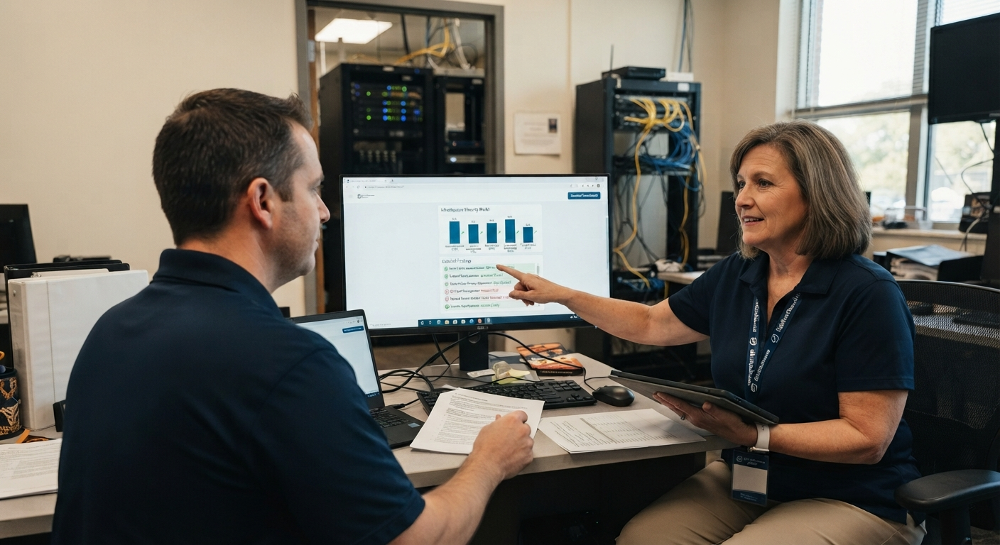

An in-depth, independent review of your entire IT estate — hardware, software, networks, safeguarding, and governance — benchmarked against KCSIE and the DfE's digital technology standards.
This isn't a supplier contract review, and it isn't a sales exercise. It's a complete assessment of how your school's technology supports teaching, learning, and safeguarding — and whether it measures up to what KCSIE and the DfE now require.
EduAudit doesn't supply hardware, software, or IT support. We make no commission on anything we recommend. Our findings are based on what we observe in your environment, measured against the standards — which is why governors and leadership teams trust them.
The audit is run with whoever holds responsibility for technology at your school — an IT manager, a business manager, or the digital lead. It doesn't require deep technical knowledge on your part. We ask the questions in plain language and guide you through it.

What's in use across the school, how old it is, whether it's managed centrally, and whether it's genuinely fit for purpose. Out-of-life devices are one of the most common findings in schools — and one of the most overlooked.
What's installed and actually used, whether licences match your user numbers, and whether you're paying for tools that have been forgotten. We also check how software is kept patched — a key Cyber Essentials control.
Cabling, switches, Wi-Fi coverage, and resilience. We benchmark your broadband and network against the DfE's digital standards and check whether the infrastructure genuinely supports day-to-day teaching.
How IT decisions are made, whether a digital lead has been allocated — which the DfE requires — and whether your filtering, monitoring, and online safety arrangements hold up against KCSIE.
We understand your school, your context, and what you want to know. We confirm scope and give you a fixed quote — no obligation.
We visit your school and work through our in-house auditing platform: infrastructure, systems, safeguarding controls, and the people who use them.
You receive a tailored report mapping what's in place against KCSIE and the DfE standards, with recommendations ranked by priority.
We talk you through the findings in plain English, answer your governors' questions, and support remediation, Cyber Essentials, or strategy next steps if you want them.
The audit works on a school-by-school basis, so each site gets its own report — standards in place vary significantly even within a single trust. We can add a trust-level summary, showing what's consistent, what's fragmented, and where the biggest priorities are.
Every EduAudit report is bespoke. It tells you exactly where you stand, what to fix first, and why it matters.
A clear statement of your school's position against KCSIE and the DfE digital standards, area by area.
Findings ordered by priority — from urgent safeguarding risks to planned, phased investment.
The starting point for your digital technology strategy, which all schools are now expected to have.
Documentation that supports Ofsted, COBIS, CIS, and verification conversations about your safeguarding and IT controls.
As a Cyber Smart reseller we can convert the audit into your Cyber Essentials or Plus certification.
Written for heads, governors, and business managers — not just for IT specialists.
No. The audit works with whoever holds responsibility for technology at your school. We guide you through the process in plain language — technical depth on our side, not yours.
That's fine — schools with simpler setups often have the most gaps. We assess what's there against what the standards expect, regardless of size or complexity.
Not necessarily. Some findings lead to straightforward changes costing very little. Others point to phased investment. You decide what to prioritise and when.
Yes. KCSIE and the DfE standards apply to all schools regardless of size. Primaries with limited in-house IT resource often gain the most from an independent view.
Yes. The same evidence base feeds directly into Cyber Essentials and Cyber Essentials Plus certification, which as a Cyber Smart reseller we can complete for you.